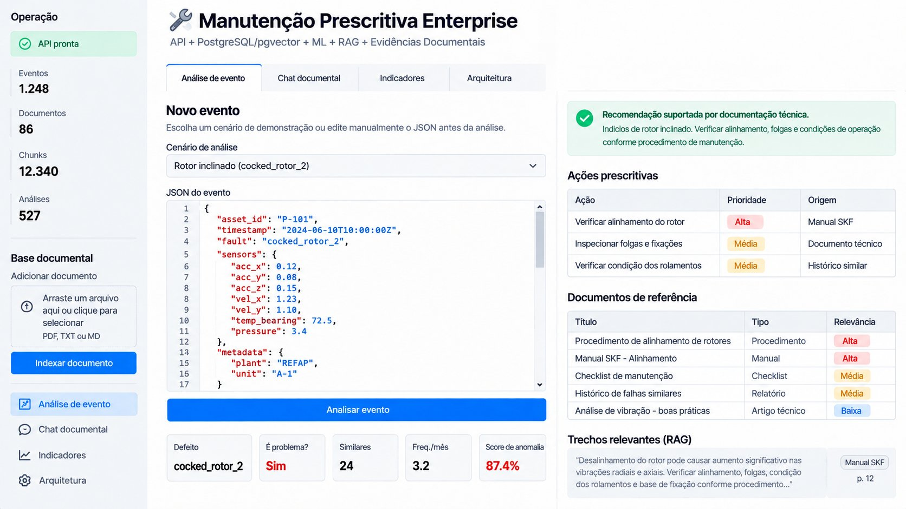

AI / Machine Learning / RAG / Full Stack
Prescriptive Maintenance Enterprise
Full Stack AI platform for prescriptive analysis of industrial assets, combining operational data, Machine Learning, vector search and technical documentation to generate maintenance recommendations.
- Python, FastAPI, PostgreSQL, pgvector and Redis
- Isolation Forest for anomaly detection
- Embeddings, vector search and RAG architecture
- Interactive dashboard for asset analysis
- Clean Architecture, DDD and SOLID
- Docker, automated testing and observability
- Processing of more than 166,000 operational events